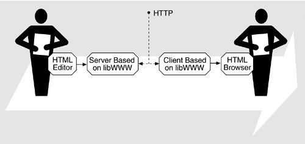
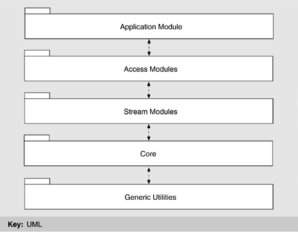
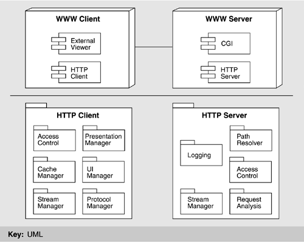

| [ Team LiB ] |
|
13.3 Architectural SolutionThe basic architectural approach used for the Web, first at CERN and later at the World Wide Web Consortium (W3C), relied on clients and servers and a library (libWWW) that masks all hardware, operating system, and protocol dependencies. Figure 13.3 shows how the content producers and consumers interact through their respective servers and clients. The producer places content that is described in HTML on a server machine. The server communicates with a client using the HyperText Transfer Protocol (HTTP). The software on both the server and the client is based on libWWW, so the details of the protocol and the dependencies on the platforms are masked from it. One of the elements on the client side is a browser that knows how to display HTML so that the content consumer is presented with an understandable image. Figure 13.3. Content producers and consumers interact through clients and servers We now go into more detail about both the libWWW and the client-server architecture used as the basis for the original Web and that still largely pervades Web-based software. Section 13.4 will discuss how the architecture of the Web and Web-based software have changed in response to the e-commerce revolution. MEETING THE ORIGINAL REQUIREMENTS: libWWWAs stated earlier, libWWW is a library of software for creating applications that run on either the client or the server. It provides the generic functionality that is shared by most applications: the ability to connect with remote hosts, the ability to understand streams of HTML data, and so forth. libWWW is a compact, portable library that can be built on to create Web-based applications such as clients, servers, databases, and Web spiders. It is organized into five layers, as shown in Figure 13.4. Figure 13.4. A layered view of libWWW The generic utilities provide a portability layer on which the rest of the system rests. This layer includes basic building blocks for the system such as network management, data types such as container classes, and string manipulation utilities. Through the services provided by this layer, all higher levels can be made platform independent, and the task of porting to a new hardware or software platform can be almost entirely contained within the porting of the utilities layer, which needs to be done only once per platform. The core layer contains the skeletal functionality of a Web application—network access, data management and parsing, logging, and the like. By itself, this layer does nothing. Rather, it provides a standard interface for a Web application to be built upon, with the actual functionality provided by plug-in modules and call-out functions that are registered by an application. Plug-ins are registered at runtime and do the actual work of the core layer—sending and manipulating data. They typically support protocols, handle low-level transport, and understand data formats. Plug-ins can be changed dynamically, making it easy to add new functionality or even to change the very nature of the Web application. Call-out functions provide another way for applications to extend the functionality provided in the core layer. They are arbitrary application-specific functions that can be called before or after requests to protocol modules. What is the relationship between the generic utilities and the core? The generic utilities provide platform-independent functions, but they can be used to build any networked application. The core layer, on the other hand, provides the abstractions specific to building a Web application. The stream layer provides the abstraction of a stream of data used by all data transported between the application and the network. The access layer provides a set of network-protocol-aware modules. The standard set of protocols that libWWW originally supported are HTTP—the underlying protocol of the World Wide Web; Network News Transport Protocol (NNTP)—the protocol for Usenet messages; Wide Area Information Server (WAIS)—a networked information retrieval system; File Transfer Protocol (FTP), TELNET, rlogin, Gopher, local file system, and TN3270. Many of these are becoming rare, but others, such as HTTPS (HTTP Secure) have been added. It is relatively simple to add new protocol modules because they are built upon the abstractions of the lower layers. The uppermost layer, consisting of the Web application modules, is not an actual application but rather a set of functionality useful for writing applications. It includes modules for common functionality, such as caching, logging, and registering proxy servers (for protocol translation) and gateways (for dealing with security firewalls, for example); history maintenance, and so on. LESSONS FROM libWWWAs a result of building libWWW and the many applications that rest on it, several lessons have been learned. These lessons have derived in part from the developers' experience in trying to meet the requirements that we listed in Section 13.2—that Web-based tools be heterogeneous, support remote access across networks, be noncentralized, and so forth. However, the requirement that turned out to be the most challenging was supplying unforeseen bells and whistles. That is, allowing the features of Web-based applications to grow has driven many decisions in libWWW and has led to the following lessons:
It turns out that libWWW does not support all of these goals as well as it might. For example, the libWWW core makes some assumptions about essential services, so not all features can be dynamically replaced. Furthermore, libWWW is meant to run on many different platforms, and so it can not depend on a single-thread model. Thus, it has implemented pseudothreads, which provide some, but not all, of the required functionality. Finally, most current Web applications do not support dynamic feature configuration; they require a restart before new services can be registered. AN EARLY CLIENT-SERVER ARCHITECTURE USING libWWWIn Figure 13.5 we show a deployment view of a typical Web client-server that was built using libWWW services. A module decomposition view is also shown for the HTTP client and server components of the deployment view. The figure makes a few points about libWWW. First, not all parts of a client-server are built from it. For example, the user interface is independent. Second, the names of the managers do not directly correspond to the names of the layers: Although the access manager, protocol manager, and stream manager are clearly related to the access and stream layers, the cache manager uses the services of the application layer. The stream managers in the client-server pair manage the low-level communications, thus ensuring transparent communication across a network for the other parts of the system. Figure 13.5. Deployment view of a Web client-server with a module decomposition view of the HTTP client and server components The user interface (UI) manager handles the look-and-feel of the client's user interface. However, given the open-ended set of resources that a WWW system can handle, another element, the presentation manager, can delegate information display to external programs (viewers) to view resources known by the system but that the UI manager does not directly support. For example, most Web viewers use an external program to view PostScript or .pdf files. This delegation is a compromise between the competing desires of user interface integration (which provides for a consistent look-and-feel and hence better usability) and extensibility. The UI manager captures a user's request for information retrieval in the form of a URL and passes the information to the access manager. The access manager determines if the requested URL exists in cache and also interprets history-based navigation (e.g., "back"). If the file is cached, it is retrieved from the cache manager and passed to the presentation manager for display to either the UI or an external viewer. If it is not cached, the protocol manager determines the type of request and invokes the appropriate protocol suite to service it. The client stream manager uses this protocol for communicating the request to the server. Once it receives a response from the server in the form of a document, this information is passed to the presentation manager for appropriate display. The presentation manager consults a static view control configuration file (mimerc, mailcap, etc.) to help it map document types to external viewers. The HTTP server ensures transparent access to the file system—the source of the documents that the Web exists to transfer. It does this either by handling the access directly (for known resource types) or through a proxy known as common gateway interface (CGI). CGI handles resource types that a native server cannot handle and handles extension of server functionality, as will be discussed next. Before these extensions, the available WWW servers implemented a subset of defined HTTP requests, which allowed for the retrieval of documents, the retrieval of document meta-information, and server-side program execution via CGI. When a request is received by the server stream manager, its type is determined and the path of the URL is resolved via the path resolver. The HTTP server consults an access list to determine if the requesting client is authorized for access. It might initiate a password authentication session with the client to permit access to secured data. Assuming authentication, it accesses the file system (which is outside the server boundary) and writes the requested information to the output stream. If a program is to be executed, a process is made available (either new or polled) through CGI and the program is executed, with the output written by the server stream manager back to the client. In either case, CGI is one of the primary means by which servers provide extensibility, which is one of the most important requirements driving the evolution of Web software. CGI became such an important aspect of Web-based applications that we now discuss this topic at greater length. COMMON GATEWAY INTERFACEMost information returned by a server is static, changing only when modified on its home file system. CGI scripts, on the other hand, allow dynamic, request-specific information to be returned. CGI has historically been used to augment server functionality: for input of information, for searches, for clickable images. The most common use of CGI, however, is to create virtual documents—documents that are dynamically synthesized in response to a user request. For example, when a user looks for something on the Internet, the search engine creates a reply to the user's search request; a CGI script creates a new HTML document from the reply and returns it to the user. CGI scripts show the flexibility of early architectures which were based on libWWW. In Figure 13.5, CGI is shown as external to the HTTP server. CGI scripts are written in a variety of languages, some of which are compiled (C, C++, Fortran) and some of which are interpreted (perl, VisualBasic, AppleScript, etc.). These scripts allow a developer to extend a server's functionality arbitrarily and, in particular, to produce information that the server will return to the user. However, because scripts may contain any functionality written in C, perl, and so on, they represent an enormous security hole for the system on which they are installed. For example, a script (which runs as a process separate from the server) might be "tricked" into executing an arbitrary command on the host system on behalf of a remote user. For this reason, server-side scripts such as CGI have led to a new requirement for increased security. The use of HTTPS to address this requirement will be described in the next section. Probably the most important additional feature that CGI brought to the Web architecture is that it allows users to "put" information into the Web, in contrast to the "get" operation that servers normally provide. Although the requirement to put in information was listed in the original World Wide Web project requirements, it has not been fully achieved. CGI allows users to put information only in application-specific ways, such as adding it to a database by filling out a form. CGI solved many problems inherent in the original design of libWWW—principally because it provided much needed server extensibility to handle arbitrary resources, allowed users to put data in limited ways—it also had several substantial shortcomings. The security issue was one; another was portability. CGI scripts written in VisualBasic, AppleScript, and C Shell work on Windows, Macintosh, and UNIX, respectively. These scripts cannot be (easily) moved from one platform to another. ACHIEVING INITIAL QUALITY GOALSTable 13.2 describes how the Web achieved its initial quality goals of remote access, interoperability, extensibility, and scalability.
|
| [ Team LiB ] |
|